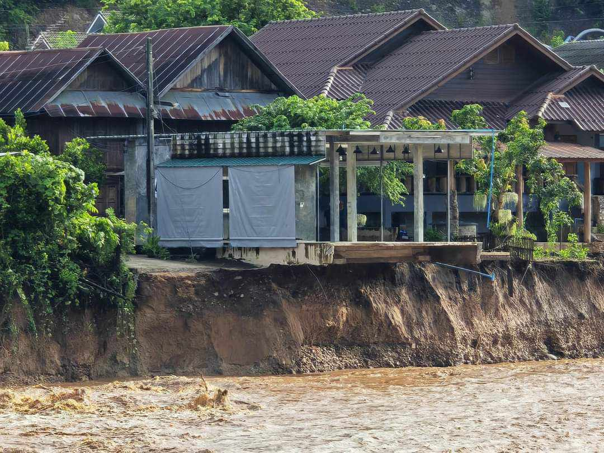

Toggle Sidebar

The village name
Village detail
District/Subdistrict
Distance to pratom
Distance to Mathayom
Project Name
Good health and wellbeing is one of the 17 United Nations Sustainable Development Goals. Promoting a healthy community is one of the most important ways to reduce poverty and inequality, helping communities to thrive. One of the main reasons for poor health in Karen communities is through lack of access to adequate clean water, sanitation and hygiene (WASH) facilities. Around 40% of the population in Mae Hong Son lack access to clean drinking water and adequate waste disposal making. This makes them vulnerable to many diseases including diarrhea, typhoid, stomach ulcers and parasitic worms. Not only do these cause short-term health problems but they can also cause long-term chronic complications which have lasting impacts on health, education and livelihoods outcomes, helping continue the cycle of poverty. The Karen Hilltribes Trust (KHT) is one of the few organisations working in this region, reaching out to the poorest and most isolated communities Mae Hong Son. We are dedicated to working towards good health and wellbeing. All our projects are coordinated in cooperation with every village we work in to ensure long-term sustainability and local ownership. Our current health project is WASH – Water, Sanitation and Hygiene. Read more about our WASH project below. So far, our health projects have provided 55,643 Karen people with improved WASH conditions through installing over 200 water systems and building or repairing 3,150 latrines!